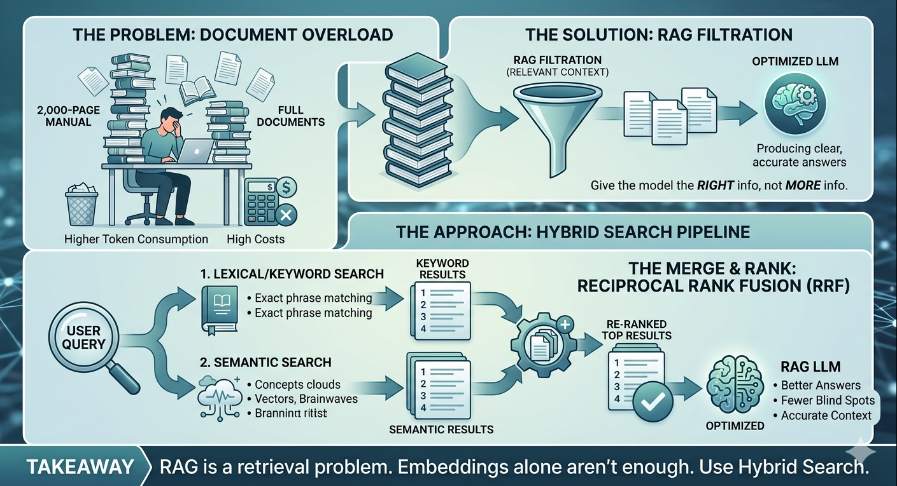

More information doesn't always mean better answers. Imagine asking a colleague to find one configuration setting in a 2,000-page manual. Giving them the entire manual slows them down. Giving them the 3 relevant pages helps them find the answer faster and more accurately.
That's exactly what Retrieval-Augmented Generation (RAG) does for LLMs.
What is RAG and Why Do We Need It?
Large Language Models can only reason over the context they receive. A common mistake is sending entire documents, codebases, or knowledge repositories to the model and expecting better results.
This creates two problems:
- Higher token consumption and API costs
- More noise, which can reduce answer quality
RAG solves this by retrieving only the most relevant information and providing that context to the LLM. The goal is not to give the model more information. The goal is to give it the right information.
What Did I Find While Working with RAG?
While building a multi-agent application, I realized that retrieval quality matters more than most people think. After breaking documents into chunks and storing them with embeddings, retrieval is often done using one of two approaches:
1. Keyword Search
Traditional search looks for exact terms. Searching for AUTH_TOKEN will find AUTH_TOKEN.
This works well when users know the exact keyword, identifier, variable name, or acronym. The limitation is that it struggles when the same concept is described using different words.
2. Semantic Search
Semantic search converts both documents and queries into vectors and matches based on meaning rather than exact wording. This helps when users and documents use different terminology.
However, it has its own limitations:
- Exact identifiers, variable names, and acronyms can be diluted in vector space
- Semantically similar content may rank above an exact match
- Some queries simply don't need semantic understanding and would be better served by a direct text match
The Solution: Hybrid Search
Instead of choosing between keyword search and semantic search, use both. Run them in parallel:
- Keyword Search → captures exact matches
- Semantic Search → captures intent and meaning
Then merge the results using Reciprocal Rank Fusion (RRF).
If a document appears in both result sets, it gets a ranking boost. Documents found by only one method can still appear, but usually lower in the list.

The Result
- Better retrieval quality
- Fewer blind spots
- More relevant context for the LLM
- Better answers without increasing context size
Takeaway
One of the biggest lessons I learned is that RAG is fundamentally a retrieval problem, not a vector database problem.
Embeddings are useful, but retrieval quality often depends on the combination of keyword search, semantic search, filtering, reranking, and ranking strategies.
If you're building RAG for agentic systems, don't think in terms of keyword vs semantic search. Use both. The improvement in retrieval quality is often noticeable from day one.
Building RAG for Your Application?
Need help designing a retrieval pipeline that actually works?
Let's Talk